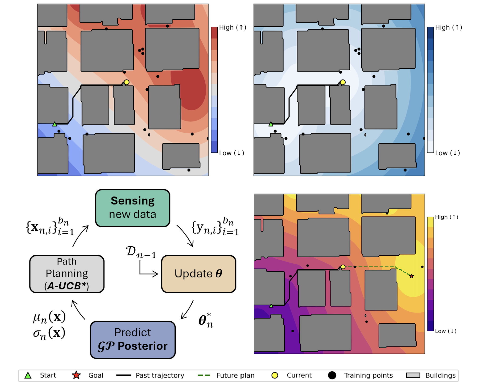
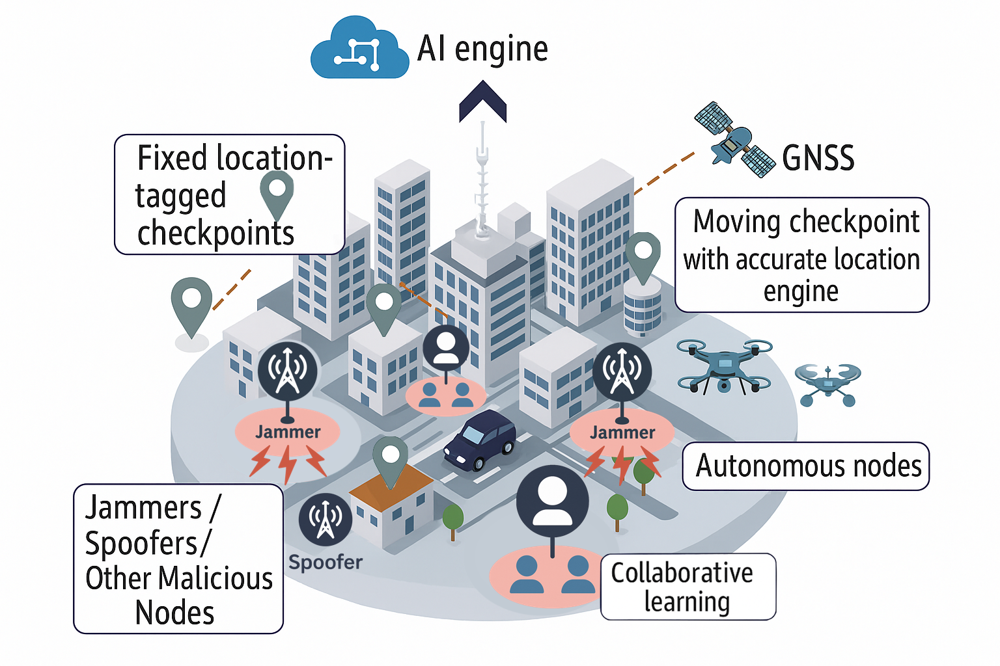

Publications
2026



Trends and Challenges in Next-Generation GNSS Interference Management
IEEE Aerospace and Electronic Systems Magazine.


Trends and Challenges in Next-Generation GNSS Interference Management
IEEE Aerospace and Electronic Systems Magazine.